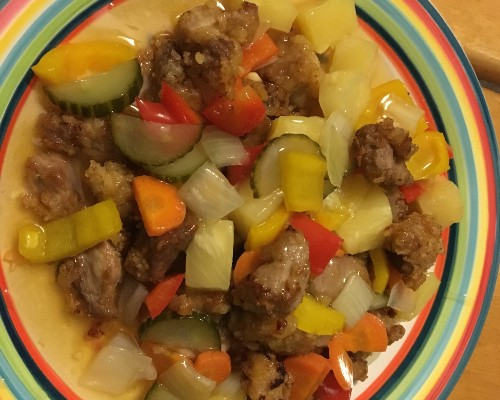

Rubin's Day YouTube Video. It is a very first video on the Jayden TV. I will be uploading more fun videos for you guys.
Also I will make my channel looks nicer and better. Rubin does Magic and played with daddy.
Rubin was So Cute!!!
1M views 1 month ago
JaydenTV 1M subscribers
Up next
Lim's Family went to Wahiheke Island.JaydenTV82K views
Mommy went to hospital?! What happen to Sori?JaydenTV97K views

Daddy's cooking day! Jayden made Sweet and Sour Pork.JaydenTV64K views